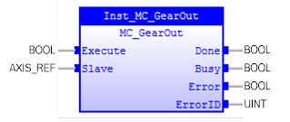

Example
Example
(* Example
for MC_GearOut *)
inst_GearOut ( Execute := bExecute, Slave := SlaveRef );
bDone := inst_CamOut.Done;
bBusy := inst_CamOut.Busy;
bError := inst_CamOut.Error;
ErrorId := inst_CamOut.ErrorID;
Disengages the Slave axis from the Master axis.

MC_GearOut stops operation of MC_GearIn (start gear operation) or MC_GearInPos (positioning gear operation) of the slave axis in operation specified in ‘Slave’ parameter at the specified ‘Deceleration’. If ‘Deceleration’ is set to 0, the maximum value of deceleration will be used.
MC_GearOut does not affect MC_GearIn operation of the master axis.
The timing of this function block is described as follows:
If MC_GearOut is executed while MC_GearIn or MC_GearInPos instruction is in execution, ‘CommandAborted’ for MC_GearIn or MC_GearInPos will change to TRUE, and ‘Busy’ (Executing) of MC_GearOut will change to TRUE.
If MC_GearOut is executed while instructions other than MC_GearIn or MC_GearInPos are in execution, it will result in an error.
Make sure the input and output parameters are of data type indicated in the table below.
It is assumed that this command is followed by another command, for instance MC_Stop, MC_GearIn, or any other command. If there is no new command, the default condition should be: maintain last velocity.
After issuing MC_GearOut, there is no FB active on the slave axis until the next FB is issued. This can result in problems because no motion command is controlling the axis. Alternatively, the actual velocity can be read via MC_ReadActualVelocity and MC_MoveVelocity can be issued on the slave axis with the actual velocity as input. The FB is here because of compatibility reasons.
|
Name |
Data Type |
Description |
|
INPUTS |
||
|
Slave |
AXIS_REF |
Reference to the slave axis |
|
Execute |
BOOL |
Start disengaging process at rising edge |
|
OUTPUTS |
||
|
Done |
BOOL |
Disengaging completed |
|
Busy |
BOOL |
The FB is not finished and new output values are to be expected |
|
Error |
BOOL |
Signals that an error has occurred within the FB |
|
ErrorID |
UINT |
Error identification |
|
|
|
(* Example
for MC_GearOut *)
|